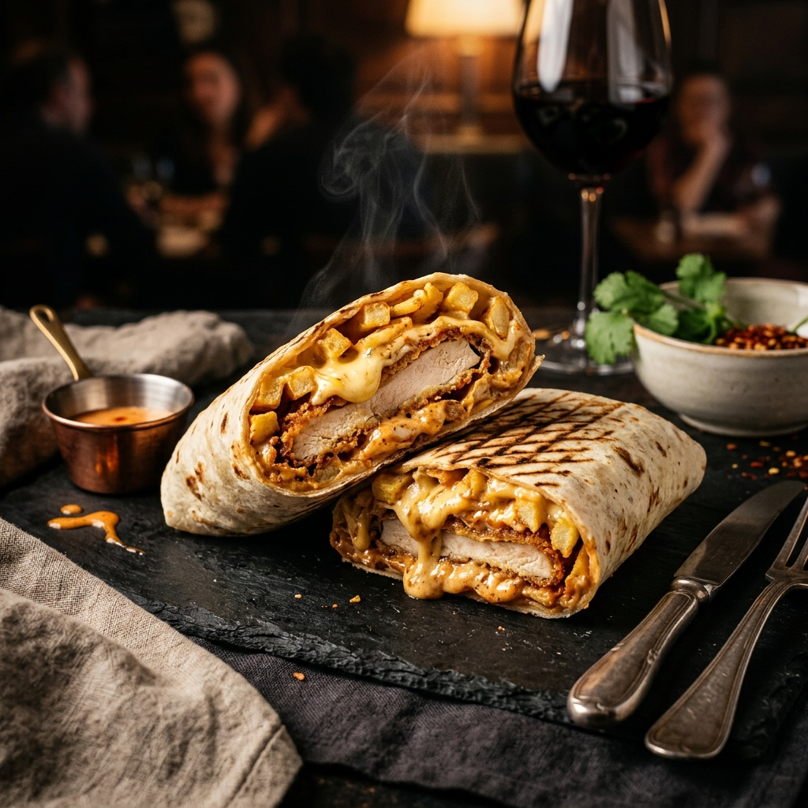

Un Paysage Street Food Unique en Méditerranée
En voyageant à travers la Tunisie, et tout particulièrement dans les villes balnéaires du Cap Bon comme Hammamet, on est frappé par l'inventivité et la générosité des établissements de restauration rapide. Bien loin des menus standardisés des multinationales, la street food tunisienne s'est forgée une identité propre, puisant dans son riche héritage méditerranéen pour créer des spécialités métissées devenues légendaires.
De la pâte à pain fraîchement étalée aux sauces épicées mijotées avec de l'ail et du carvi, tour d'horizon des quatre spécialités que tout visiteur se doit d'avoir goûtées au moins une fois lors de son passage chez Fratello Fast Food.
1. Le Makloub : L'Invention Culinaire Tunisienne par Excellence
Le mot « Makloub » signifie littéralement « retourné » ou « inversé » en arabe tunisien. C'est sans doute le sandwich le plus emblématique du pays. Sa particularité réside dans l'utilisation exclusive d'un pâton de pizza frais, pétri le jour même :
- Le pizzaïolo étale le pâton à la commande.
- Il le garnit d'une couche légère d'harissa diluée à l'huile d'olive, de mayonnaise onctueuse, de fromage râpé et de viande de son choix (émincé de dinde mariné, escalope panée ou thon méditerranéen).
- Le pâton est replié en demi-lune, scellé sur les bords, puis enfourné sur la sole chaude.
Sous l'effet de la chaleur vive, le pain cuit en gonflant tandis que le fromage fond à l'intérieur. À la sortie du four, on y ajoute de la salade méchouia parfumée, des dés de tomates fraîches et des olives noires. Le contraste entre le pain chaud croustillant et les crudités fraîches est une révélation gustative.
2. Le Tacos Français à la Tunisienne : Le Roi de la Générosité
Né dans la région lyonnaise au début des années 2000, le « French Tacos » a trouvé en Tunisie son second foyer spirituel. Mais les Tunisiens y ont apporté leur touche inimitable :
Enfermée dans une tortilla de blé toastée au grill strié, la garniture associe une ou deux viandes généreuses (le fameux Tacos Double Escalope chez Fratello), des frites croustillantes et une sauce fromagère maison chaude et coulante. L'ajout d'une note d'harissa locale apporte ce kick aromatique unique qui réveille les papilles sans jamais masquer la douceur du fromage.
3. L'Ojja Royale : La Tradition Mijotée sur Plaque
L'ojja est la reine des tables familiales et des pauses déjeuner conviviales. Cousine de la chakchouka, elle se compose d'une sauce tomate réduite à feu doux avec des piments verts doux ou piquants, de l'ail généreux, du carvi et de la coriandre en poudre.
En fin de cuisson, des œufs entiers sont délicatement cassés dans la sauce fumante afin que le blanc cuise doucement tout en conservant un jaune coulant. Chez Fratello, notre Ojja Royale est sublimée avec des crevettes fraîches de la baie d'Hammamet ou des merguez artisanales dorées, servie avec du pain chaud traditionnel pour saucer jusqu'à la dernière goutte.
4. Le Panuozzo : L'Héritage Italien au Cœur de Hammamet
En raison de la proximité géographique et historique avec l'Italie (la Sicile n'est qu'à quelques encablures du Cap Bon), la culture culinaire italienne est omniprésente à Hammamet. Le panuozzo en est l'une des plus belles expressions :
Ce sandwich de grand format est cuit deux fois : une première cuisson du pain de pizza étiré en longueur, puis une seconde cuisson après garnissage (charcuteries fines, mozzarella fondue, roquette fraîche et crème de fromage). C'est le repas de partage parfait pour les grandes tablées d'amis après une journée de détente sur la plage.
Venez Goûter la Différence chez Fratello
Toutes ces spécialités sont préparées chaque jour avec des ingrédients frais dans notre restaurant situé sur la Route Nationale 1 à Baraket Sahel, Hammamet. Retrouvez nos formules complètes, plateaux et sandwichs sur notre menu officiel en ligne (menu.fratellofast.food) ou commandez par WhatsApp au +216 23 445 536.